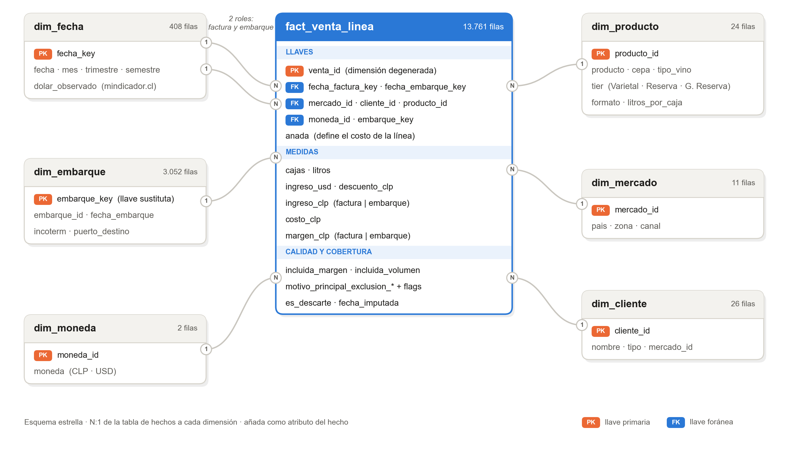
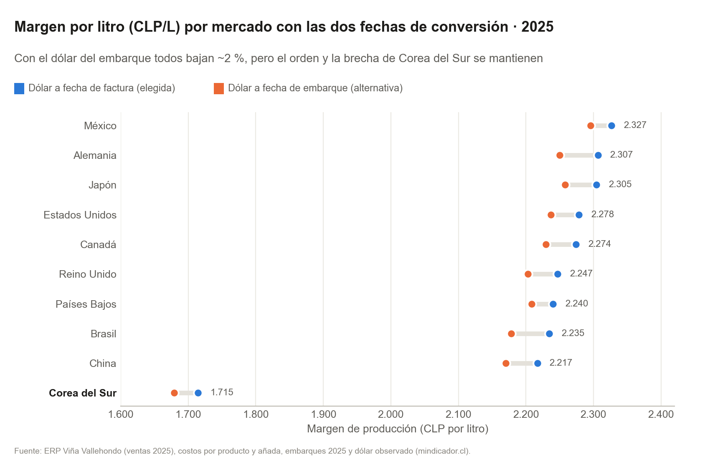
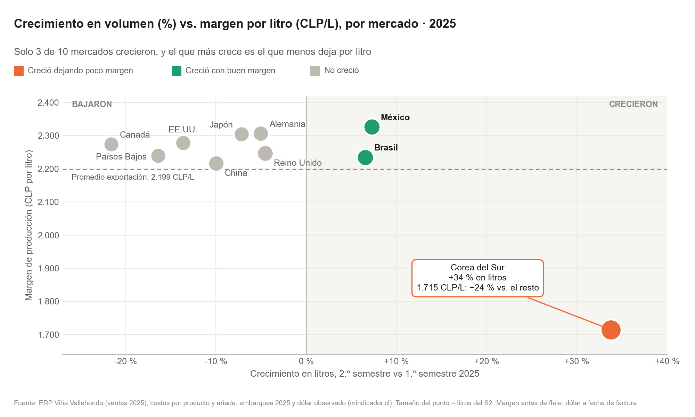
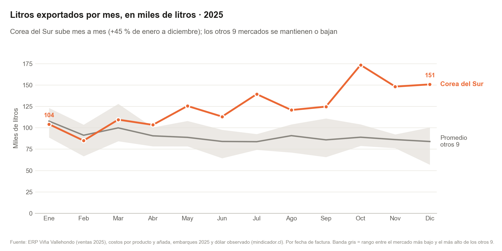
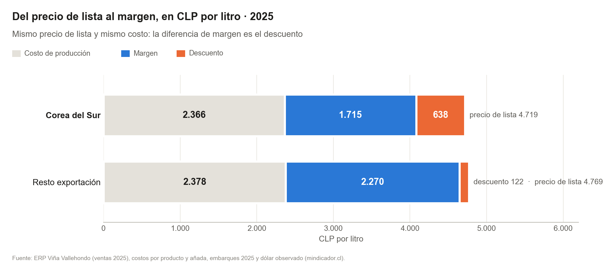

IIC3752 · Tecnologías para Inteligencia de Negocios · Segundo semestre 2026 · Entrega 1
| Grupo | V1 |
| Integrantes | Vanessa Castro (líder), Vicente Gajardo, Felipe Lobos, Natalia Moraga, Vicente Rodríguez |
| Contraparte | Gerencia, Área de Operaciones, Viña Vallehondo |
| Profesor | Sergio Bocaz |
| Fecha | 14 de octubre de 2026 |
| Repositorio | github.com/vicntealonso/vina-vallehondo-bi |
Pregunta elegida (P3): ¿Qué mercados crecieron en volumen y, de esos, cuáles dejaron buen margen y cuáles crecieron dejando poco?
Por qué esta y no otra. La contraparte es el Área de Operaciones, y en la reunión (acta del 07-09) su prioridad fue decidir dónde poner el esfuerzo exportador: “lo que más nos importa es poder saber cuál es la estrategia que tenemos que utilizar para nuestra exportación (…) hay que saber en cuáles de las canastas poner más esfuerzo” (acta). Hoy no tienen esa lectura: “no hemos hecho el doble clic para ver por qué mercado nos va mejor o nos va peor” (acta), y miden solo “por litro vendido” (acta). En el hilo de correo posterior pidieron “si un mercado se ve bien en litros y débil en pesos, muéstrennos las dos lecturas” (correo), que es exactamente el cruce que pide P3. Por eso el acta ya dejó P3 como pregunta elegida. Descartamos las otras tres, como quedó registrado en el acta: P1 (efecto del tipo de cambio) es la inquietud de Finanzas, no de nuestra contraparte, y no indica en qué mercado actuar. P2 (precio vs premiumización) explica el precio promedio de la empresa, no dónde poner el esfuerzo. Igual incorporamos el tier que pidió Operaciones (“el tier de calidad… no se considera”, acta): la mezcla es casi idéntica entre mercados (24–28 % gran reserva), así que no explica las diferencias de margen. P4 (qué fecha usar para convertir) es una definición que la empresa no ha cerrado; la cerramos como supuesto explícito (ver abajo y D).
| Origen | Hallazgo |
|---|---|
| VERBALIZADO | Los descuentos se negocian caso a caso (“empresa de uno a uno”); no hay política transversal (acta). El descuento especial fue una decisión del directorio “de guata” para entrar con más fuerza, que se refleja en el crecimiento (acta), tomada “sin un análisis de margen” (correo). |
| VERBALIZADO | El año se cierra por fecha de factura y no hay definición formal del dólar (acta). No hay margen mínimo oficial ni meta por mercado, no hay datos del año anterior, Finanzas usa el dólar observado y el flete no está en los datos ni lo enviarán (correo). |
| MEDIDO | Confirma lo anticipado en el acta (“un mercado creció más por volumen y tiene un descuento promedio aproximado al 13 % frente al 2 % del resto”): es Corea del Sur, el único que crece fuerte (+33,8 % en litros, S2 vs S1) y el de menor margen (1.715 vs 2.270 CLP/L), con 13,5 % de descuento frente a 2,6 %. |
| MEDIDO | Corea del Sur paga el mismo precio de lista y tiene el mismo costo por litro y la misma mezcla de tiers que el resto: la brecha de margen es casi entera descuento (516 de 555 CLP/L). |
| MEDIDO | El 25,6 % de las líneas del ERP no permite calcular margen (sin costo para la añada, monto que no cuadra, sin moneda, duplicados); 125 líneas tienen las cajas registradas en botellas. |
| INFERIDO | Crecer en litros no implica crear valor (acta). Como referencia: el descuento extra de 2025 (569 MM CLP) supera el margen que dejaron los litros adicionales del S2 (371 MM CLP), suponiendo que sin descuento Corea no habría crecido. |
Definiciones que la contraparte no cerró y cómo las cerramos.
Un solo comando, python run.py, corre la cadena completa en ~2 segundos (instalación ~15 s; ver README del repositorio). Lee las cuatro fuentes: la base SQLite del ERP (7 tablas, 13.898 ventas), el CSV de costos por producto y añada (84 filas, latin-1), el JSON de embarques (3.067 embarques, 10.776 líneas) y la API de mindicador.cl (dólar observado 2025–2026, con copia local por si la API no responde). Limpia, integra, construye el modelo dimensional en SQLite y calcula desde ese modelo todas las cifras y gráficos de este informe (output/resumen.md). Se probó en un ambiente limpio y reproduce las cifras exactas.
Cada línea queda con su motivo de exclusión, para medir la calidad en vez de forzarla: 137 duplicados, 688 líneas sin moneda, 776 montos que no cuadran con cajas × precio × (1 − descuento), 82 facturas con año 2026 (son de 2025: el venta_id es correlativo con la fecha, corr. 0,9999), cajas en botellas, embarques con mercado distinto al de la venta. Los venta_id a cotejar con Finanzas están en output/venta_ids_para_finanzas.csv.

Decisión defendida 1 — grano de línea, no de embarque ni de mercado-mes. El costo depende de la añada de cada línea (“el costo de una venta es el de la añada que viene en esa misma línea”); un grano más grueso obligaría a promediar costos de añadas distintas. Y el embarque no sirve como grano: agrupa varias ventas y su mercado no coincide con el de la venta en ~63 % de los vínculos. No hay un grano más fino útil (el ERP no registra botellas ni lotes).
Decisión defendida 2 — la fecha es una dimensión con dos roles. El hecho tiene dos llaves a dim_fecha (factura y embarque), y el dólar observado vive en esa dimensión. Así el mismo modelo calcula la métrica con ambas definiciones de conversión, que es la sensibilidad de D. Además: la añada queda como atributo del hecho (su único uso es el costo), dim_embarque usa llave sustituta (15 embarque_id repetidos con datos distintos) y Corea del Sur (zona 8, inexistente) se asigna a Asia.
Qué resuelve y qué no. Resuelve margen y volumen por mercado, período, tier y cepa con cualquiera de las dos fechas. No resuelve el margen puesto en destino. Fuera del modelo: flete y seguro CIF/FCA y distribución nacional (no hay datos, y no los enviarán), aranceles/TLC (todos los mercados tienen TLC), fecha de cobro a 60/90 días (sin registro; es P4) y vendedores (uno por zona, no aportan a P3).
| Crecimiento en volumen | Margen de producción por litro | |
|---|---|---|
| Fórmula | Litros S2 ÷ Litros S1 − 1 | Σ (ingreso neto USD × dólar observado a fecha de factura − cajas × costo por caja de la añada) ÷ Σ litros |
| Numerador | Σ cajas × litros por caja (formato), facturas jul–dic 2025 | Ingreso neto en CLP menos costo de producción, todas las líneas del mercado en 2025 |
| Denominador | La misma suma, facturas ene–jun 2025 | Σ cajas × litros por caja de las mismas líneas |
| Filtros | Exportación; venta_id único; fuera solo cajas dudosas (en botellas o distintas al embarque): 2,3 % de las líneas | Exportación; venta_id único; con moneda; monto que cuadra (±1 %); cajas que cuadran con el embarque; costo de la añada disponible |
| Unidad | % de variación en litros | CLP por litro, antes de flete. Lectura complementaria: margen % = Σ margen ÷ Σ ingreso CLP |
Descartes (cajas negativas): restan ingreso y litros; el costo no se reversa (correo). Fines de semana y feriados: dólar del último día hábil anterior. Clasificación: “creció” si crecimiento > 0; “buen margen” si margen/L ≥ promedio de exportación (2.199 CLP/L).
Decisión de definición: fecha de conversión. Alternativas: (a) fecha de factura (elegida): con ella la empresa cierra su resultado y es el dato más confiable; (b) fecha de embarque: cuando el vino sale del país, pero el 30 % de las líneas tiene embarque anterior a la factura; (c) fecha de cobro (60/90 días): no hay registro por venta y es P4, fuera de alcance.
| Mercado | Crec. litros S2/S1 | Crec. T4/T1 | CLP/L factura | CLP/L embarque | Dif. | Margen % fact. → emb. | Clasificación |
|---|---|---|---|---|---|---|---|
| Corea del Sur | +33,8 % | +58,1 % | 1.715 | 1.679 | −2,1 % | 42,0 → 41,5 | Creció dejando poco margen |
| México | +7,3 % | +3,3 % | 2.327 | 2.296 | −1,3 % | 49,1 → 48,8 | Creció con buen margen |
| Brasil | +6,6 % | −3,8 % | 2.235 | 2.178 | −2,5 % | 48,6 → 47,9 | Creció con buen margen* |
| Reino Unido | −4,6 % | −9,4 % | 2.247 | 2.203 | −2,0 % | 48,8 → 48,3 | No creció |
| Alemania | −5,1 % | −17,9 % | 2.307 | 2.250 | −2,5 % | 49,0 → 48,4 | No creció |
| Japón | −7,2 % | −8,1 % | 2.305 | 2.258 | −2,0 % | 49,2 → 48,7 | No creció |
| China | −10,0 % | −11,9 % | 2.217 | 2.170 | −2,1 % | 48,3 → 47,8 | No creció |
| Estados Unidos | −13,7 % | −23,0 % | 2.278 | 2.237 | −1,8 % | 48,9 → 48,5 | No creció |
| Países Bajos | −16,4 % | −16,5 % | 2.240 | 2.208 | −1,4 % | 48,8 → 48,4 | No creció |
| Canadá | −21,6 % | −29,6 % | 2.274 | 2.229 | −2,0 % | 48,7 → 48,2 | No creció |
| Total exportación | 2.199 | 2.155 | −2,0 % |
* Con crecimiento T4 vs T1, Brasil pasa a “No creció”. Fuente: output/sensibilidad_definiciones.csv.

Cuánto cambia. Con la fecha de embarque, el margen de exportación baja de 18.869 a 18.499 MM CLP (−370 MM, −2,0 %). El peso se apreció en 2025 (dólar de ~$996 en enero a ~$911 en diciembre) y el embarque llega en promedio 29 días después de la factura: el tipo de cambio efectivo baja de 951 a 942 CLP/USD.
Pero la alternativa no cambia la respuesta, y eso es un hallazgo. Ningún mercado cambia de clasificación, el ranking solo intercambia dos pares de vecinos, y la brecha de Corea del Sur con el resto es casi idéntica: 555 CLP/L con factura y 546 CLP/L con embarque. El desfase, y por lo tanto el dólar, es parecido en todos los mercados: mueve el nivel, no las diferencias. Lo que separa a Corea del Sur no es el tipo de cambio.
Segunda definición, período de crecimiento. Con T4 vs T1, Corea del Sur crece aún más (+58 %) y México sigue creciendo; Brasil deja de crecer (su S2 supera al S1 por un T2 débil). La estacionalidad no explica a Corea del Sur: Japón (−7 %) y China (−10 %), en la misma región y estación, bajan.



| El hallazgo en pesos (2025) | MM CLP |
|---|---|
| Descuento de Corea del Sur por sobre el del resto (13,5 % vs 2,6 %) M | 569 |
| Ídem, estimado sobre el 100 % de sus litros (el cálculo cubre el 73 %) I | ~776 |
| Margen que dejaron los 216.567 litros extra del S2 M | 371 |
| Recuperable con tope de descuento de 8 %, igual volumen M | 286 |
| Caída de volumen que tolera ese tope sin perder margen I | 13 % |
Recomendación a la gerencia. Corea del Sur es hoy el mercado que más crece y el que menos deja por litro, y la causa es el descuento especial, no el producto ni el costo. En 2025 aumentó sus compras 34 % mientras siete de diez mercados bajaron, pero cada litro dejó 1.715 pesos frente a 2.270 en el resto. Compra el mismo vino, con la misma mezcla, al mismo precio de lista y con el mismo costo; solo cambia el descuento: 13,5 % frente a 2,6 %. Ese descuento, decidido sin un análisis de margen, costó 569 millones de pesos en 2025. Como referencia, los litros adicionales del segundo semestre dejaron 371 millones de margen.
Límite: margen antes de flete. Si llegar a Corea del Sur cuesta más que al promedio (en CIF lo paga la viña), su margen real es aún menor y la recomendación se refuerza.
Cobertura de datos. Queda fuera del cálculo de margen el 25,6 % de las 13.898 líneas de origen: 13,7 % sin costo para su añada, 5,6 % con monto que no cuadra, 5,0 % sin moneda, 1,0 % duplicadas y 0,3 % con cajas distintas al embarque. Queda fuera del volumen el 2,3 %. La falta de costo pesa parecido en todos los mercados de exportación (12,5 % a 16,3 % de sus líneas), por lo que no sesga la comparación.
Efectos medidos con run.py sobre el modelo. “Equipo V1” = decisión tomada por el grupo completo.
| # | Supuesto | Por qué | Qué pasa si es falso | Quién y cuándo |
|---|---|---|---|---|
| 1 | Dólar observado a la fecha de factura | El año se cierra por factura; Finanzas usa dólar observado; embarque poco confiable | Con embarque: −370 MM CLP (−2,0 %); ningún mercado cambia de clasificación; brecha Corea 555 → 546 CLP/L | Equipo V1, acta 07-09-2026 |
| 2 | Margen antes de flete; CIF, FOB y FCA iguales | Sin datos de flete; no los enviarán | En CIF/FCA el margen real es menor; si el flete a Corea es mayor, la conclusión se refuerza | Equipo V1, acta 07-09-2026 |
| 3 | Ingreso neto = monto_neto (después del descuento) | “El descuento no es un segundo precio” | Es la definición de la empresa | Contraparte, correo (sep-2026) |
| 4 | Crecimiento = S2 vs S1 2025 | No hay año anterior; períodos de igual largo | Con T4/T1, Brasil pasa a “No creció”; Corea y México no cambian | Equipo V1, 12-10-2026 |
| 5 | Buen margen = ≥ promedio de exportación ponderado (2.199 CLP/L) | No hay meta oficial | Con la mediana (2.261) Brasil pasaría a “poco margen”; Corea queda lejos de cualquier umbral | Equipo V1, 12-10-2026 |
| 6 | Líneas sin moneda fuera de montos | Instrucción: no rellenar | 688 líneas (5,0 %) fuera del margen; sí cuentan en volumen | Contraparte, correo |
| 7 | Monto que no cuadra (tolerancia 1 %) sale del margen | “No lo fuercen” | 776 líneas; la tolerancia no importa: ninguna línea se desvía entre 0,1 % y 5 % | Contraparte; tolerancia Equipo V1 |
| 8 | Cajas en botellas (monto = 1/12) o ×10 vs embarque se excluyen | Monto y embarque contradicen las cajas | 181 líneas fuera del volumen (1,3 %) | Equipo V1, 12-10-2026 |
| 9 | Duplicados: una fila por venta_id | “Es la misma venta” | 137 filas; 8 difieren en más que el formato (se conserva la primera) | Contraparte, correo |
| 10 | Facturas con año 2026 son de 2025; fecha inferida por venta_id vecinos | venta_id correlativo con la fecha (0,9999); “facturas de este ejercicio” | 82 líneas; excluirlas: Corea 1.715 → 1.708, resto 2.270 → 2.267 | Equipo V1, 12-10-2026 |
| 11 | Columna mes del ERP no se usa | Contradice a la fecha en 882 filas | Usarla movería ~880 líneas de período | Equipo V1, 12-10-2026 |
| 12 | Descartes restan ingreso y litros; el costo no se reversa | “El costo de catálogo no se reversa” | 60 líneas de exportación; excluirlas: Corea 1.737, resto 2.284 (brecha igual) | Contraparte, correo |
| 13 | Costo de la añada de la línea; si falta, fuera del margen | “No usen el costo de otra añada” | 1.910 líneas (sobre todo añada 2021); pesan parecido en todos los mercados | Contraparte, correo |
| 14 | 9 L por caja en 12x750 y 6x1500 | Dato de la empresa (correo) | — | Contraparte, correo |
| 15 | Feriados y fines de semana: dólar del día hábil anterior; 1-ene-2025 usa el del 2-ene | Convención del dólar observado; serie 2024 no disponible en la API | 44 líneas; efecto en el margen anual < 0,1 % | Equipo V1, 12-10-2026 |
| 16 | Corea del Sur (zona 8 inexistente) es Asia | Vendedor Export Asia; 93 % de sus ventas dicen “Asia” | No afecta la métrica (es por país) | Equipo V1, 12-10-2026 |
| 17 | Mercado = el de la venta, no el del embarque | Cuadra 100 % con el cliente; el del embarque difiere en ~63 % | Redistribuiría ventas entre países sin respaldo | Equipo V1, 12-10-2026 |
| 18 | El crecimiento de Corea se debe al descuento especial | Verbalizado: “se ve reflejado en el crecimiento” | Si hubiera crecido igual sin descuento, el descuento sería aún más difícil de justificar | Contraparte, reunión |
Usamos Claude (Anthropic), mediante Claude Code, para escribir y depurar el código de la cadena de datos, perfilar la calidad de los datos, generar los gráficos y redactar borradores de este informe; el equipo revisó y validó todas las cifras, definiciones y recomendaciones.